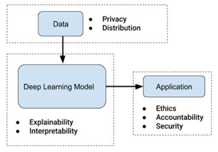

aj(dot)vish(at)outlook(dot)com
+(65)-91727531
My primary research goal is to understand human emotions. I am interested in affective computing and technology ethics.
At Dauwels lab, my role is to
develop
virtual
characters which simulate the behaviour of a schizophrenic patient. This behaviour is based
on
insights
from audio, depth and language data
obtained from mental health institutes. These avatars are eventually used to train
psychiatrists
to
detect schizophrenic symptoms. (ongoing project)
At Institute of Media Innovation, we develop a virtual agent with affect recognition, model and behavior. The aim is to make the avatar (or humanoid) realistic and we could possibly compare various psychological models of affect such as OCC theory, dimensional theory and Scherer's appraisal theory. This software development is currently in progress.
At Dauwels Lab, we develop a system which can simulate negative schizophrenic symptoms in the form of a virtual character. Being autonomous, our character interacts with a person, say a psychiatrist, and delivers appropriate responses. These responses are triggered based on a perception-decision-action loop which processes the psychiatrist’s dialog, body language, emotion, and audio signal. For more information, you can check out this draft.
Real-time action detection is a new and practically challenging problem in computer vision; use of state of the art offline action detection techniques in the real-time scenario result in large number of false positive detections. In addition, these detections need to be announced in real time, thus demanding fast detections without compromising on accuracy. Our work attempts to overcome these challenges by detecting hand gestures from ego-centric depth sequences on-the-fly. To aid this mission, we introduce a novel dataset comprising of 4061 long videos, containing 42583 single action subsequences over 30 action classes from 33 individuals. A model is developed by training an Error-correcting Hough Transform (ECHT) system, combined with post-processing. Our new system is empirically evaluated on this real-life dataset and is shown to improve detection results. This work goes further to use this proposed system to accurately control and navigate a drone.
We are in the age of artificial intelligence (AI). The common man is feeling the influence: from social media news feeds to bank loan approval. Capitalism has made possible this large-scale distribution of these computer algorithms and is showing no signs of stopping. Humankind has benefitted aplenty from these powerful prediction and classification mechanisms for more accurate decisions in areas such as healthcare, manufacturing and transportation. This is especially true when it comes to reducing human errors and automating menial tasks. If AI continues to flourish at this rate, we should go with the flow and reap its benefits, right? No, it’s not that simple....
Let’s take a step back and understand AI. The original aim of AI was to achieve or surpass the human level of cognition, now known as general AI. The modern definition construes AI as the study and design of intelligent agents. Currently, the hype is due to deep learning, a type of supervised machine learning, which is a form of narrow AI. Supervised machine learning is the ability of a computer to make predictions after learning from data. These decisions are made through architectures and parameters designed based on this data. A neural network is one such architecture, which has been the basis for deep learning (DL) techniques. In general, DL methodologies use data and provide more accurate results to problems in video, audio, natural language processing, and so on. In the next few sections, we will further explore the issues of DL, along with possible safety measures.
Deep learning algorithms are data hungry. Additionally, the activities on the internet over the last two decades have laid the foundation for mass data harvesting and user profiling. In particular, information brokers and social media sites have collected huge volumes of detailed information on millions of customers. A majority of this data mining happens without user consent. The user profile is on sale to corporations and bodies, including marketers, advertisers, analytics firms, and, most alarmingly, hackers. The 2016 US election hack is the most apparent example that comes to mind. The massive scale falls right into the territory of these DL algorithms, and information brokers would love a higher accuracy in data analytics. Data privacy, a major topic of conversation in 2018, is the first step towards an ethical AI. Most notably, the General Data Protection Regulation (GDPR) by the EU sent shockwaves across the globe. Any violation would result in massive fines starting at 20 million euros. Although GDPR is a welcome move, like every other policy, it’s not perfect and needs refining. Perhaps discussing these areas of improvement, along with the EU, is the next step forward.
Human beings are susceptible to bias. Our history, personality, perception and several other factors can influence our decision making. Bias is not such a bad thing because, sometimes, the diversity in subjective opinions can lead to the truth. However, when it comes to machines, there can never be bias and objectivity must be the primary goal. The bad news is, we are not there yet. Facial recognition algorithms, for example, are very accurate for a certain race but not necessarily for others. Things become serious when it misidentifies an innocent person as a criminal.
Similarly, in health care, finance and transportation, bias towards gender, race or religion could have serious implications on decision making. Sometimes, these errors are unavoidable due to the sparsity of data. But when large datasets are used, it is important for AI developers to be multi-disciplinary, multicultural teams. These measures may not eliminate bias, but could dramatically reduce it.
Traditional machine learning methods, such as support vector machines and random forests, are quite easy to debug. One could use either a model-specific or a model-agnostic technique to understand why the network behaves in the way it does. However, the same ease of understanding is almost non-existent for neural networks, especially a recurrent neural network (RNN). If you find a chatbot or speech processor trained using a deep neural network, it is most likely modelled on an RNN. Without getting into the details, an RNN is a neural network where connections between neurons form a sequence along a particular direction. These networks are generally good at predicting time-series sequences. As of January 2019, there is no peer-reviewed publications that show promise towards unearthing the activities within an RNN.
Discovered in 1986, the recurrent neural network is not recent. Given this, one must wonder why there isn't a solution that helps to interpret one. And since there is none, it goes to show how complicated the problem is. Additionally, numerous publications using this neural network are making matters worse. AI developers mostly don’t care about this black box as long as it spits out the right predictions. This is worrying because we are exploring new territory blindfolded. Thus, there is an urgent need for more funding on research about interpreting RNNs and other types of neural networks. Not only that, a user interface that shows this data in real-time is critical for widely used applications. There are very few AI developers who know or consider including these tools in their applications. This is the second problem: lack of motivation and awareness about interpretable AI. Perhaps, regulators and ethics boards of institutions must make more noise about making the usage of the available tools compulsory.
Human life is difficult to imagine without a community. We thrive from having a sense of purpose, be it from a family or a neighbourhood. In 2005, when Facebook was a rising star, it intended to bring our community together. It was revolutionary, as we could connect with long lost classmates and friends. However, along the way, Facebook's goals changed. Instead of being a platform to bring people together, it ramped its efforts to monetize the data we provided. Now it's the complete opposite: it's tearing society apart into filter bubbles. Our data is used by its AI algorithms for profit instead of helping us form meaningful relations.
Facebook's unethical use of user data is perhaps the largest scale of violation made by algorithms. Additionally, the Cambridge Analytica scandal did not make matters better as it brought into question our data's security. What's more concerning is that, apart from the GDPR, few laws and policies are in place to keep such companies in check. Of course, there is rising awareness currently among corporations and governments. They have ethics boards in place to assess the morality of AI applications developed. On what basis the ethics are determined is a whole other topic. Despite not being present in most companies, it is encouraging to see some taking more responsibility. And it is urgently required that others set up an ethics board as well.
The other threat of narrow AI is posed by the loss of jobs due to automation. With the state of the art deep learning methods exceeding human level accuracy in specific tasks, it is possible to entirely remove the human from the loop. For example, if cancer detection or conveyor belt tasks can be done better by robots, thousands of jobs could be at stake. One way AI developers can prevent an abrupt loss of jobs is by early detection. A survey to understand how many jobs are affected must be done. Before deploying this new AI, this survey could be shared with an employment ministry (eg., MOE) to think of alternatives for these affected jobs.
Security is the other concern of an AI application. Last year, there were publications that showed how image recognition AIs could be fooled by introducing noise into the images. Also, the trolley car problem in driverless vehicles is widely discussed. Accountability in AI is another topic that litigators are trying to piece together, i.e., who is responsible when the algorithm kills or damages someone? In other words, progress is being made in different areas of AI safety, but they haven't come together yet. Maybe it's time to think about all these issues together and present a more generalized solution.
In the previous sections, the importance of data, interpretability and application were studied. This section aims to bring the above together in the form of a SafetyNet. The below figure shows SafetyNet, a framework for ethical narrow AI.
The blue boxes represent a component of the AI application and the dotted lines surrounding them represent a safety net. The points in bullets are safety features relevant to the respective component. Example, for Data, privacy and distribution are the areas of concern for the safety of the AI. The goal of the SafetyNet is to help AI developers and companies to consider every ethical aspect while building an AI. This could either be in the form of a document or video.
SafetyNet could be included as a separate section in, for example, Andrew Ng's Coursera courses on Machine Learning and Deep Learning. It could help thousands of learners think about safety each time they piece together a component of AI. Being a generic framework for DL algorithms, the safety guidelines could be catered to a type of neural networks such as faster RCNN or U-nets. In other words, SafetyNet is an editable document that could be modified for future use; example, if there is a new technique to improve the transparency of RNNs, it could be part of the Deep Learning Model section under “Interpretability”. This way, we have an open source AI safety manual which covers every aspect to a respectable degree.
Ethics is a complicated topic within the realm of philosophy. There are different definitions of ethics in various regions, and, moments in human civilization. However, when we look at the distinct versions of ethics more closely, they follow a common theme: by following these ethical principles, mankind must be able to live a good and healthy life. Therefore, to develop an ethical narrow AI, it’s important that all its parts: data, model and application, don’t cause harm to human life. Every AI developer must consider the morality of a system and use SafetyNet as a way to achieve this. Of course, there are more advanced forms of AI, such as deep reinforcement learning etc., which are more powerful at achieving its goals. Then there is also general AI which aims to be as intelligent as, or better than humans. However, before we try to fix those advanced issues, let's get the basics right. Let’s fix deep learning.